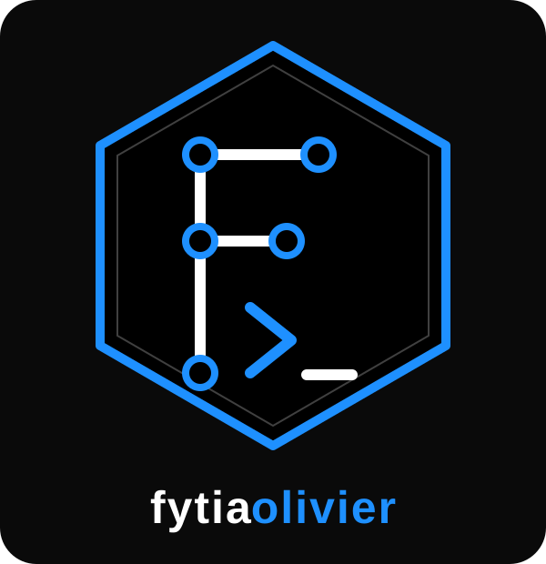

01
Application de gestion
PorciGest
Gestion d’élevage porcin : stocks d’aliments, distributions, pesées et suivi de la mortalité.
Voir le projet
PORTFOLIOFy Tia Olivier RANDRIAMAHAZO
Ouvert aux opportunités · Stage de 6 mois dès janvier 2027
Étudiant en Licence 3 de Service Informatique aux Organisations (SIO), spécialité Systèmes et Réseaux, je m’intéresse à l’administration informatique et à la création d’outils utiles. Je recherche un stage de six mois pour apprendre sur le terrain et contribuer à une équipe.
01 / À propos
Je suis RANDRIAMAHAZO Falitiana Fy Tia Olivier, étudiant en troisième année de Service Informatique aux Organisations, spécialité Systèmes et Réseaux à ESMIA Innovation.
Ma formation mêle les réseaux avancés, administration système : Linux et Windows, bases de données et développement web. En parallèle, mon expérience d’assistant technique m’a appris à répondre à des besoins informatiques réels, avec méthode et sens du service.
02 / Sélection
Application de gestion
Gestion d’élevage porcin : stocks d’aliments, distributions, pesées et suivi de la mortalité.
Voir le projetApplication de gestion
Gestion pédagogique d’une pharmacie : produits, fournisseurs, stocks, achats, ventes et rapports.
Voir le projetServices & mobilité
Gestion de courses de taxi et de livraisons de colis, avec attribution et suivi des missions.
Voir le projetProjets académiques · Les détails techniques sont disponibles dans chaque dépôt.
03 / Boîte à outils
Administration Windows et Linux · Modèle OSI / TCP-IP · VLAN · DHCP / DNS · Adressage IP, CIDR et VLSM · Câblage réseau
Python · Java · JavaScript · PHP · C · HTML / CSS · Spring Boot · Django · Laravel
MySQL · PostgreSQL · SQLite · Git / GitHub · Cisco Packet Tracer · VirtualBox · Docker · VS Code
Malagasy (natif) · Français (avancé) · Anglais (intermédiaire) · Organisation · Travail en équipe
04 / Expérience
Assistant technique
Appui aux tâches informatiques et administratives de l’établissement, notamment la saisie de plus de 40 informations administratives et de plus de 50 sujets d’examens. Soutien en mathématiques auprès des élèves du collège.
05 / Contact
Complétez le formulaire pour m’envoyer un message. Je vous répondrai par e-mail.
Si le formulaire ne fonctionne pas, écrivez à fytiaolivier@gmail.com.